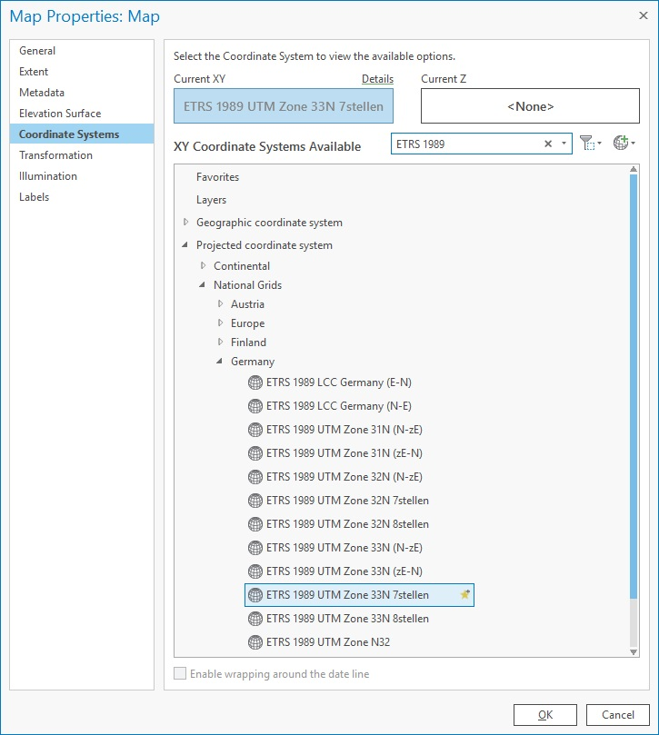
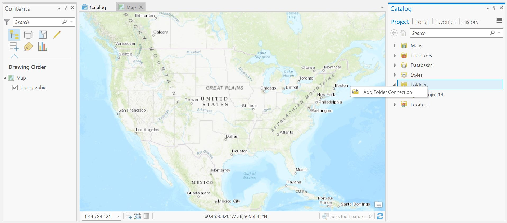

Anleitung
Erste Schritte in ArcGis Pro
Inhaltsverzeichnis
- Erstellung eines neuen Projekts
- Speichern & Teilen eines Projekts
- Erstellen einer Folder Connection
- Ordner Extrahieren
Erstellung eines neuen ArcGis Pro Projekts
(Neuer Ordner für Projekte)
Erstelle einen Ordner für alle künftigen Projekte. Dieser sollte sich auf einem der privaten Laufwerke (U: oder S:) oder wahlweise auf einem USB-Stick befinden.

Neues Projekt anlegen
Öffne ArcGis Pro und erstelle ein neues Projekt (Blank) und wähle den gewünschten Speicherort für dieses Projekt aus. In dem gewählten Speicherort wird ein neuer Ordner für das Projekt angelegt und alle zukünftig erzeugten Daten werden in diesem gespeichert.

Nach der Erzeugung des Projekts solltet Ihr die Speicherorte kontrollieren, z.B. die der „Databases“.

Anpassung Koordinatensystem
Bevor mit der Arbeit begonnen wird, sollte das passende Koordinatensystem für die „map“ festgelegt werden. Das System richtet sich u.a. an die Anforderungen des Projekts aber auch an die später verwendeten Daten. Wir wählen, solange nichts anderes vorgegeben, das System „ETRS 1989 UTM Zone 32N 7stellen“.
Speichern & Teilen eines Projekts
Projekte können ganz einfach geteilt und auch so sicher gespeichert werden. Diese Funktion ist eine Erweiterung des normalen Speicherns, sie speichert die gesamten Daten im Projekt und verpackt sie zu einem s.g. „Project Package“. Diese Datei kann daher als Sicherung aber auch zum Teilen des Projekts dienen.

Erstellen einer Folder Connection
Um neue Daten, wie zum Beispiel Shapefiles in ArcGIS Pro einzuladen, muss eine "Folder Connection" erstellt werden. Hierzu muss im Catalog über einen Rechtsklick auf Folders "Add Folder Connection" ausgewählt werden. Achtung: Sollten die Daten im .zip Format vorliegen, müssen diese vorher extrahiert werden.
Ordner Extrahieren
Große Datenmengen liegen häufig im ".zip" Format vor. Um mit diesen arbeiten zu können, müssen diese extrahiert werden. Dies geschieht über einen Rechtsklick auf den entsprechenden Ordner und der Auswahl "Alle extrahieren". Anschließend muss der Ort angegeben werden, wo der entpackte Ordner gespeichert werden soll.